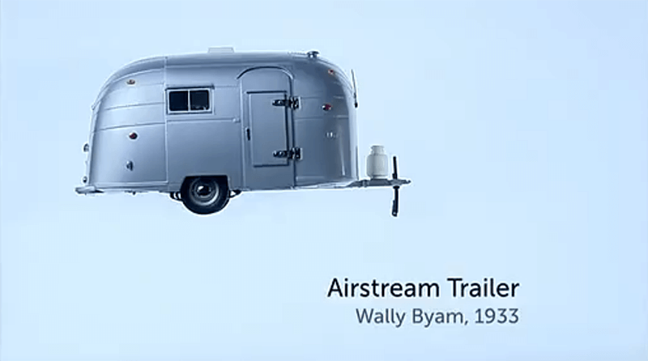

The Genius of Design II
Designs for Living


- 
-
"Fried air, which is an Italian saying for things which are meaningless. But imagine if you could take air and fry it so then it became stiff, then you sit on it, that wouldn't be bad."
炸空气，在意大利的俗语中是表示毫无意义。但设想一下你可以将空气炸一下，让它变得结实，然后你可以坐在上面，这真是个不错的主意。
-
"Cartoonist Heath Robinson poked gentle fun at the modernist lifestyle in his book How To Live in A Flat."
漫画家 Heath Robinson 巧妙地在他的漫画书《公寓生活指南》中讽刺了现代主义可笑的生活方式。
-
"Loved and loathed at the time, they left an unmistakable imprint of modernity on the timeless British countryside. Today, they have achieved one of the prime objectives of all successful design - near invisibility."
无论是褒是贬，塔桥在英国的乡村中留下了不可磨灭的代表现代性的永恒印记。如今，塔桥的设计实现了成功设计的一个主要条件——习以为常以至于忽略其存在。
-
"When you lift the lid, even just the way the knob just is interrupted from flipping back by the way it meets the handle. It'a beautiful piece of Victorian engineering."
当你打开它的盖子，壶盖的顶部后翻会碰到把手。这是一个很能代表维多利亚时期工业的设计。
-
"(The designer is )thinking not just about me, but also about the things that I might do with it. So I might take a chair and I might rest it like this (dish on the desktop) so I can clean the floor."
设计者考虑到的不仅仅只有我这个使用者，还有我可能用这把椅子做的事情。比如说我可能会把椅子倒放在桌面上，方便清理地板。
-
"Falling sales of Model T forces Ford to halt production in 1927, and to set about designing this year's model, the Model A. But Ford's reluctance to return to the drawing board cost his company millions of dollars in lost production, and its place as the dominant player in the car market. He had learnt the hard way a fundamental truth about the consumer society that was coming into being. We, the people, are not content with iron pots - we want Wedgwood vases too."
模型 T 的停止销售导致了福特1927年的停产，逼迫福特开始设计模型 A。但福特不愿改变设计方案，不仅让他的公司亏损几百万美元，也使得他在汽车市场的统治地位遭到威胁。他很努力地认识到了一个即将形成的消费者社会的基本事实——我们人类是不满意铁壶的，我们也想要 Wedgewood 花瓶。
-
"A day's output of Model Ts."
-
"A day's output of Model Ts."